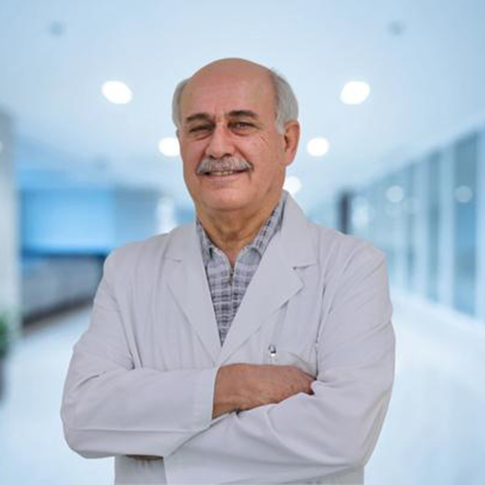

Implant dentistry
Dental Implants
Implants can replace missing teeth in selected cases. The first step is a clinical assessment to understand your oral health and the restoration you may need.
What are dental implants?
A dental implant is a component placed in the jaw to support a replacement tooth or prosthetic restoration. Whether implant treatment is suitable depends on individual clinical findings and treatment goals.
Who may be suitable?
Suitability is determined after clinical assessment. Your dentist may consider factors such as the condition of the teeth and gums, available bone, general oral health and the type of restoration being planned.
Some patients may need additional treatment or a different restorative option before implant care is considered.
Planning your treatment
Implant treatment is planned around the individual case rather than a fixed one-size-fits-all pathway.
Clinical examination and diagnostic information as indicated.
Review of implant position, restorative needs and treatment sequence.
Implant-supported restorative care after the appropriate clinical stages.
Digital planning
For selected cases, digital planning tools can support implant positioning, restorative planning and communication between the clinical team and patient. Computer-guided implant workflows may be considered where clinically appropriate.
Doctors for implant care
Dr. Munir Silwadi's professional profile includes implantology, immediate implants and computer-guided implant treatment among his clinical interests.
